marcas que se sienten en casa.
brands that feel like home.
Diseño identidad, contenido y experiencias digitales para marcas que quieren contar algo de verdad — con calma, criterio y mucho mimo por el detalle.
I design identity, content and digital experiences for brands with something real to say — with calm, intention and close attention to detail.
Diseño desde la calma — y desde el detalle.
I design from calm — and from the detail.
Soy diseñadora gráfica y digital. Me dedico a dar forma a marcas: desde el logo y la identidad, hasta sus redes, su web y todo el material que las hace reconocibles. Me gusta entender bien el problema antes de abrir el Illustrator.
I'm a graphic and digital designer. I give shape to brands — from the logo and identity to their social media, their website and every piece that makes them recognisable. I like to understand the problem well before opening Illustrator.
- 01
Escucho
I listen
Entender el problema real, no el aparente. Cada marca llega con una historia distinta.
Understand the real problem, not the obvious one. Every brand arrives with a different story.
- 02
Doy forma
I shape it
Explorar y decidir con criterio: cada color y cada tipografía tiene un porqué.
Explore and decide with intent: every colour and typeface has a reason.
- 03
Cuido
I care
Los detalles pequeños son los que hacen que una marca se sienta cuidada.
The small details are what make a brand feel looked after.
Un poco de todo, con coherencia.
A little of everything, with coherence.
Trabajo el diseño de principio a fin: la marca, cómo se cuenta y dónde vive.
I work design end to end: the brand, how it's told and where it lives.
Ride the Wave
Ride the Wave
Convertir kilómetros en becas.
Turn kilometres into scholarships.
Redes que se reconocen
Social that stands out
Diseño y gestión de contenido para Instagram y LinkedIn, con calendario y métricas.
Content design and management for Instagram and LinkedIn, with calendar and metrics.
Residencial Bora
Residencial Bora
Una marca a la altura de su entorno.
A brand worthy of its surroundings.
Residencial Gregal
Residencial Gregal
Convertir clics de anuncios en leads reales.
Turn ad clicks into real leads.
La Nucia One
La Nucia One
Una web entera, desde cero y sin plantilla.
A whole website, from scratch, no template.
Activum en papel
Activum on paper
Mucho material, una sola voz.
Lots of material, one single voice.
Proyecto confidencial
Confidential project
Identidad de marca completa para un lanzamiento aún sin anunciar. El caso completo se publica a partir del 28 de septiembre de 2026.
A complete brand identity for a launch that hasn't been announced yet. The full case study goes live from 28 September 2026.
las que uso cada día.
the ones I use every day.
Mis Proyectos
My Projects
Seis trabajos donde marca, contenido y producto digital se cuidan por igual — de la identidad a la web.
Six projects where brand, content and digital product get equal care — from identity to the web.
La Nucia One
La Nucia One
Una web entera, desde cero y sin plantilla.
A whole website, from scratch, no template.
La Nucia One necesitaba un sitio que reuniera toda su oferta en un único lugar: claro, moderno y fácil de mantener, sin un gran presupuesto de desarrollo.
La Nucia One needed a site that gathered its whole offering in one place: clear, modern and easy to maintain, without a big development budget.
Diseñar y construir en Lovable.
Design and build in Lovable.
Definí estructura, identidad y contenido, y lo construí en Lovable para iterar rápido.
I defined structure, identity and content, then built it in Lovable to iterate fast.
- Jerarquía clara y mucho aire
- Clear hierarchy, lots of breathing room
- CTA siempre a la vista
- CTA always in sight
- 100% responsive
- 100% responsive
Una web viva y lista para crecer.
A living site, ready to grow.
Un sitio a medida, rápido y autoadministrable, que la marca puede actualizar sin depender de nadie.
A bespoke, fast, self-manageable site the brand can update without depending on anyone.
Residencial Gregal
Residencial Gregal
Convertir clics de anuncios en leads reales.
Turn ad clicks into real leads.
Una promoción de obra nueva necesitaba captar contactos cualificados desde Google Ads y Meta, con una página rápida y enfocada a un único objetivo.
A new-build development needed qualified leads from Google Ads and Meta, with a fast page focused on a single goal.
Una landing de un solo objetivo.
A single-goal landing.
Sin menú que distraiga: propuesta + formulario arriba, y prueba visual debajo.
No distracting menu: pitch + form up top, visual proof below.
- Formulario above the fold
- Form above the fold
- CTA repetido por secciones
- CTA repeated through sections
- Renders + ubicación como prueba
- Renders + location as proof
Medible, optimizable y alineada con las campañas.
Measurable, optimisable, campaign-aligned.
Una página coherente con los anuncios, lista para hacer A/B y mejorar la conversión.
A page consistent with the ads, ready for A/B testing and conversion gains.
Residencial Bora
Residencial Bora
Una marca a la altura de su entorno.
A brand worthy of its surroundings.
Bora tenía una identidad anticuada e inconsistente. Pedía algo elegante y sereno, inspirado en la naturaleza y la arquitectura nazarí.
Bora had a dated, inconsistent identity. It called for something elegant and serene, inspired by nature and Nasrid architecture.
Rebranding completo, de la A a la Z.
A complete rebrand, A to Z.
Logo principal y alternativos, paleta verde Alhambra con acentos suaves y un sistema tipográfico de contraste.
Primary and alternative logos, an Alhambra-green palette with soft accents, and a contrasting type system.
- TAN Meringue para alma + Montserrat para claridad
- TAN Meringue for soul + Montserrat for clarity
- Moodboard: jardines, agua y piedra
- Moodboard: gardens, water and stone
Una identidad coherente y aplicable.
A coherent, applicable identity.
Un manual de marca que vive igual de bien en cartelería, dossieres y digital.
A brand book that lives equally well across signage, dossiers and digital.
También diseñé y construí su landing en WordPress.
I also designed and built its landing in WordPress.
La nueva identidad cobra vida en una landing propia, hecha a medida sobre WordPress.
The new identity comes to life on its own bespoke landing, built on WordPress.
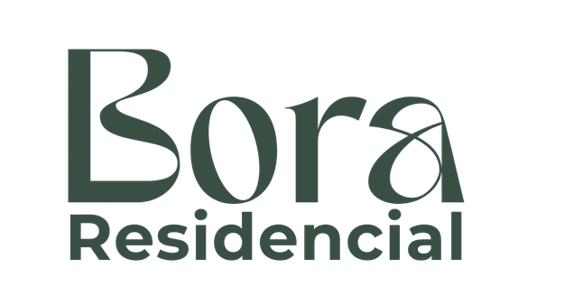
Logo principalPrimary logo
Logo invertidoInverted logo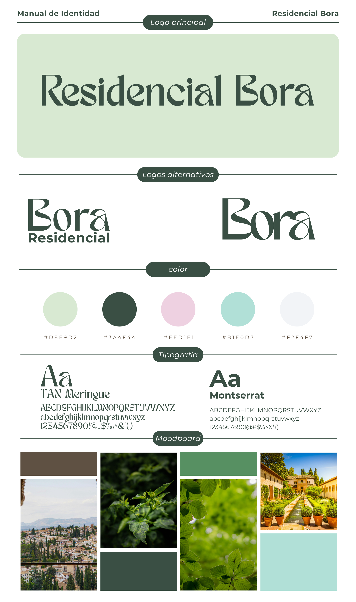
Manual de identidad completo: logo, versiones, paleta, tipografía y moodboard.
Full identity manual: logo, versions, palette, type and moodboard.
Ride the Wave
Ride the Wave
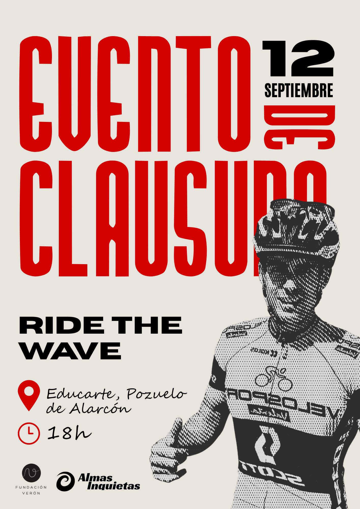
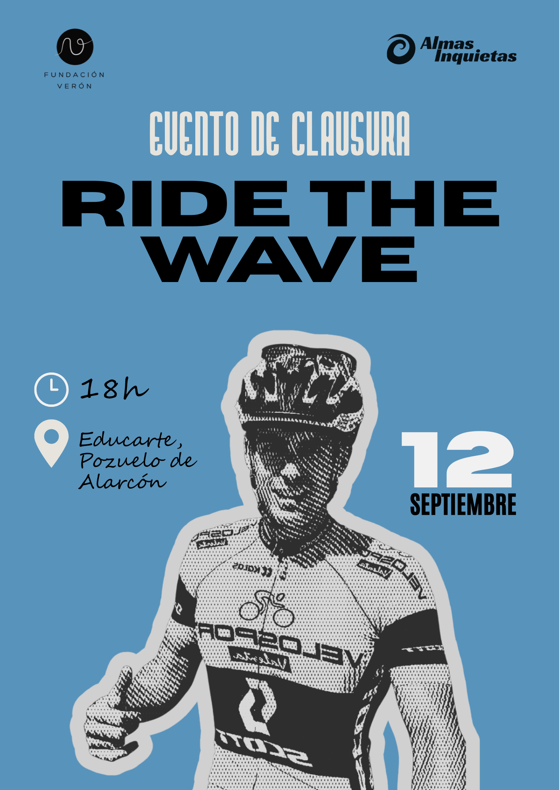
Convertir kilómetros en becas.
Turn kilometres into scholarships.
Alejandro cruza Europa en bicicleta —de Praga a Madrid, 4.000 km en 70 días— para financiar la beca comedor de 16 niños en Honduras a través de la Fundación Verón. Activum se suma como empresa colaboradora, y necesitaba un lenguaje visual para contarlo.
Alejandro cycles across Europe —Prague to Madrid, 4,000 km in 70 days— to fund the school-meal scholarship of 16 children in Honduras through Fundación Verón. Activum joined as a collaborating company, and needed a visual language to tell the story.
Cartelería para cada momento del reto.
A poster for every moment of the challenge.
Diseñé la imagen de la causa y el material para acompañar todo el recorrido, con una identidad propia que conecta con la de Fundación Verón y Almas Inquietas sin perder la de Activum.
I designed the cause's visual identity and the material to accompany the whole journey, with its own look that connects with Fundación Verón and Almas Inquietas without losing Activum's.
- Cartel del evento de clausura, en dos versiones
- Closing-event poster, in two versions
- Papeleta de la rifa solidaria
- Charity raffle ticket
- Piezas para seguir el reto en redes
- Pieces to follow the challenge on social
Un reto que se sigue de un vistazo.
A challenge you can follow at a glance.
Todo el material listo para acompañar la causa de principio a fin, del primer kilómetro al evento de clausura en Madrid.
All the material ready to follow the cause from start to finish, from the first kilometre to the closing event in Madrid.
El reto se sigue en directo en la web oficial.
Follow the challenge live on the official site.
Alejandro comparte su ruta día a día, y Activum libera su donación a medida que el equipo suma kilómetros.
Alejandro shares his route day by day, and Activum releases its donation as the team logs kilometres.
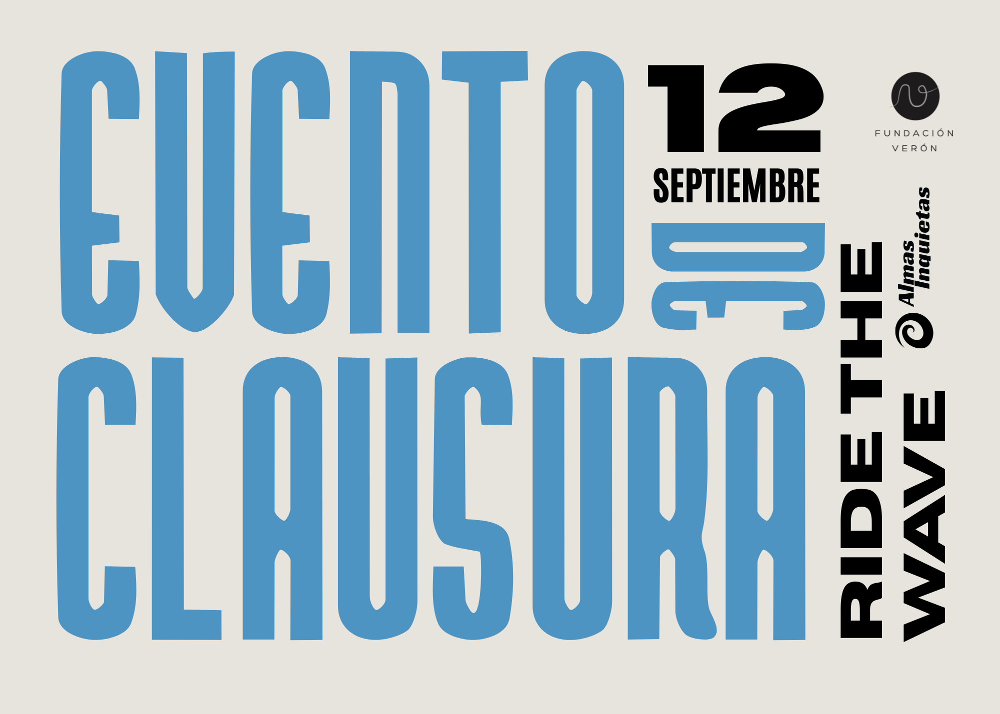
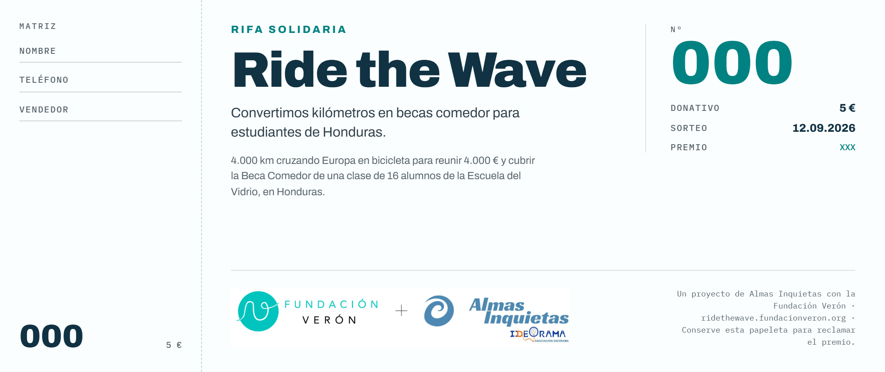
Activum en papel
Activum on paper
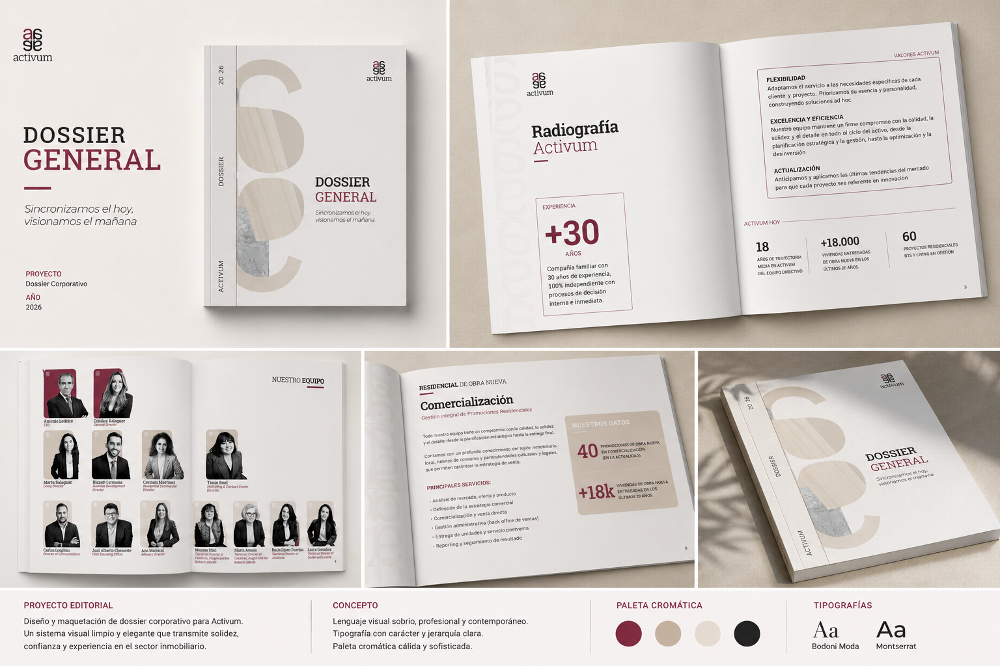
Mucho material, una sola voz.
Lots of material, one single voice.
Activum necesitaba todo su material comercial con identidad unificada: dossieres de servicios, la cartelería de un evento corporativo y una newsletter interna.
Activum needed all its commercial material under one identity: service dossiers, signage for a corporate event, and an internal newsletter.
Un sistema, muchos formatos.
One system, many formats.
Plantillas y piezas a medida con una rejilla común, para que todo se sienta de la misma marca.
Templates and bespoke pieces on a shared grid, so everything feels like one brand.
- Rejilla y jerarquía compartidas
- Shared grid and hierarchy
- Funciona impreso y en pantalla
- Works in print and on screen
- Claude para acelerar copy y estructura
- Claude to speed up copy and structure
Un kit comercial coherente y reutilizable.
A coherent, reusable commercial kit.
El equipo dispone de piezas listas para usar y adaptar, sin perder coherencia.
The team has ready-to-use, adaptable pieces that never break consistency.
Activum Inside — la revista interna, en digital.
Activum Inside — the internal magazine, digital.
Diseño y maquetación de la newsletter interna de Activum: una revista navegable pensada para el equipo.
Design and layout of Activum's internal newsletter: a navigable magazine made for the team.
Redes que se reconocen
Social that stands out
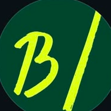
Sector inmobiliario
EASY. LIVING. MÁLAGA — en el corazón de Málaga TechPark. Alojamientos diseñados para tu estilo de vida.
www.blinkmalaga.com
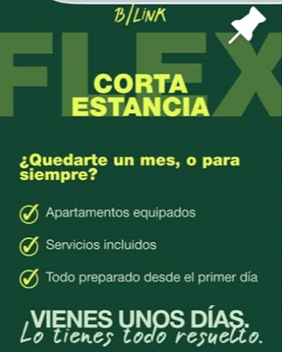
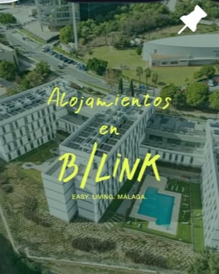
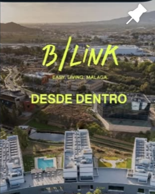
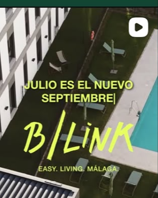
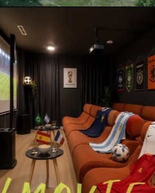
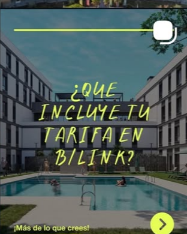
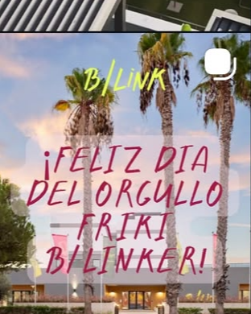
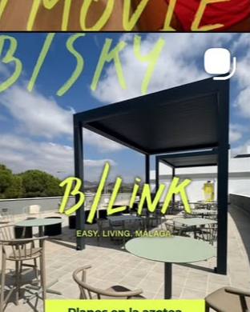
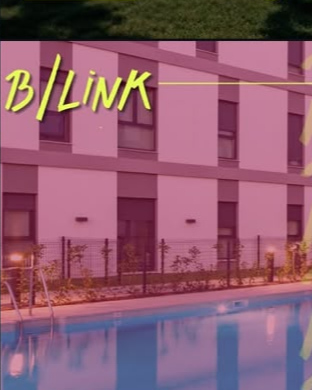
@blink_malaga
- El reto
- The challenge
- Dar a B/Link una presencia constante y muy reconocible en Instagram, con una línea propia que destacara en el feed.
- Give B/Link a constant, highly recognisable Instagram presence, with a visual line that stands out in the feed.
- El proceso
- The process
- Sistema de plantillas, calendario de contenidos y publicación gestionada con Metricool, midiendo qué funciona.
- A template system, content calendar and publishing managed with Metricool, measuring what works.
- El resultado
- The result
- Un feed coherente de un vistazo y una comunidad que crece de forma sostenida.
- A feed that's coherent at a glance and a steadily growing community.
@activum_
- El reto
- The challenge
- Una misma marca en dos canales con tonos distintos: cercano en Instagram, profesional y corporativo en LinkedIn.
- One brand across two channels with different tones: warm on Instagram, professional and corporate on LinkedIn.
- El proceso
- The process
- Línea gráfica adaptada a cada red, calendario conjunto y piezas pensadas para informar y generar confianza.
- A visual line adapted to each network, a joint calendar, and pieces designed to inform and build trust.
- El resultado
- The result
- Presencia profesional y coherente en los dos canales, alineada con el negocio.
- A professional, coherent presence on both channels, aligned with the business.
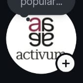
Sector inmobiliario
Empresa de servicios inmobiliarios especializada en Build to Sell (BTS), Build to Rent (BTR) y Living, con más de 30 años de experiencia.
linktr.ee/activum
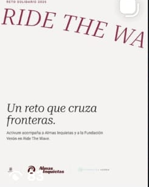
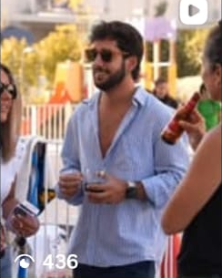
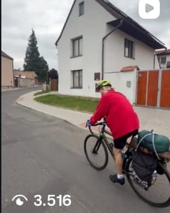
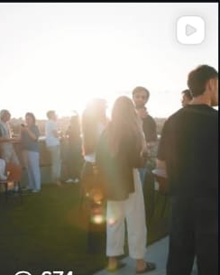
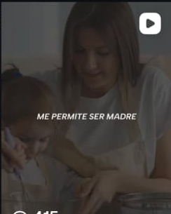
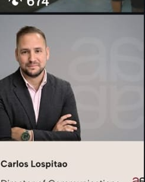
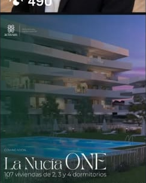
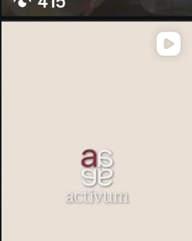
Cuéntame tu proyecto.
Tell me about your project.
Si tienes una marca que cuidar, una web que estrenar o unas redes que ordenar, escríbeme. Me encanta empezar conversaciones nuevas — sin prisa, con café.
If you've got a brand to nurture, a website to launch or social media to sort out, write to me. I love starting new conversations — no rush, with coffee.